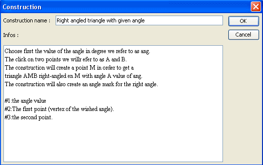

We will explain here how to create a construction and use it.
We wish to create a construction. It's purpose will be, given two points A and B and a numerical value ang, to create a triangle AMB right-angled in M with angle BAM of measure ang.
Create a new figure with menu File - New figure.
If necessary, use menu Options - Current figure to get the current figure with degree as angle unity.
Use tool  to create a calculus named ang with formula 30.
to create a calculus named ang with formula 30.
Use tool  to create two free points and use tool
to create two free points and use tool  to get them named A and B.
to get them named A and B.
Use tool  to create midpoint of A and B.
to create midpoint of A and B.
With tool  create circle with center the midpoint and through point A.
create circle with center the midpoint and through point A.
Let's now create the image of B through rotation center A and angle ang.
Click on tool  . Then click on A (rotation center). A starts blinking. Click on point B to get it's image created.
. Then click on A (rotation center). A starts blinking. Click on point B to get it's image created.
Use tool  to create the ray with origin A and going through the last point created (image point).
to create the ray with origin A and going through the last point created (image point).
Click on intersection tool  ., then click on the last ray and the circle. We will call the new point created C.
., then click on the last ray and the circle. We will call the new point created C.
Use tool  to create segments [AB], [BC] and [CA] and tool
to create segments [AB], [BC] and [CA] and tool  to mark the right angle in C (click on A, C and B in this order).
to mark the right angle in C (click on A, C and B in this order).
Our figure is now ready to create our construction.
Use menu Constructions - Sources objects choice - Graphical. Click on A, then B then right click.
Use menu Constructions - Sources objects choice - Numerical. A dialog box pops up. Click on ang in the left list the click on the button Insert.
Validate by OK.
We have nox to indicate which are our final objects. In this example, all final objects are graphical ones.
Let's point out that it is only possible to choose as final objects objects exclusively created through sources objects.
Use menu Constructions - Final objects choice - Graphical.
Click on point C, on the three segments, on the angle mark, then right click.
To get the construction finalized, use menu Constructions - Finish current construction.
Fill the dialog box popping up as follows :

Let us explain the information entered here.
The first five lines are general explanations for the future user. These explanations will pop up when pressing key F7 while implementing the construction.
The last three lines will be displayed in the indication line(at the bottom of MathGraph32 window) when the user will be asked to click on sources objects.
Each line starts with character # followed with the index of the source object.
To be noticed : When implementing a macro, numerical sources objects must always be specified first.
If you don't delete this construction, it will be saved with the figure when you save the figure to a file. But it is better to save the construction in a separate file with extension mgc.
For this use menu Constructions - Save construction of figure to file.
Let us now implement this construction in another figure.
Use menu File - New file to create a new figure.
Use menu Calculus -New variable (keyboard shortcut Ctrl + V) to create a new variable named a, with mini value of - 90, maxi value of 90, step value of 10 , current value of 30 and select checkbox Associated dialog.
Create two free points with tool and get them named C and D with tool .
Use now menu Constructions - implement construction from file and open the construction you juts saved in a file.
A dialog box pops up for th choice of numerical objects.
In the right list, click on variable a to associate a to the first source object (and only one here).
The in the indication line we see that the construction is waiting for us to click on two points. Click on point C and D. (pressing F7 will make a dialog box appear with the explanations for the construction).
You see now new objects appear : the final objects of the construction.
Click on buttons + and - in the little dialog box associated with the variable to get the angle in C change.
In more complicated constructions you can also have numerical final object sources.
Using menu Edit -Created objects protocol (tool  ) and checking checkbox Trace through constructions, you will be able to see all the objects created, including intermediary objects.
) and checking checkbox Trace through constructions, you will be able to see all the objects created, including intermediary objects.
Intermediary objects cannot be used by other objects, except using menu Constructions - Merge constructions implemented in figure.
To be noticed :
In current use, free points are only sources objects.
But you may want a free point to become a final object of a construction.
To do so :
Click on the free point while choosing graphical sources objects.
Click on the same point when clicking on final graphical objects.
A confirmation will be asked and your point will become a final object.
Created with the Personal Edition of HelpNDoc: Create HTML Help, DOC, PDF and print manuals from 1 single source